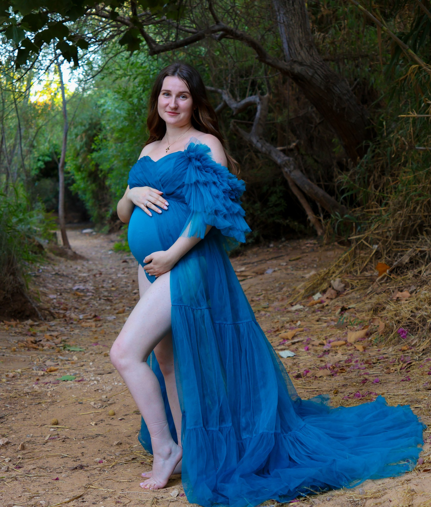

משפחה
YOUR EVERYDAY MAGICחיבוקים, תנועה וקצת בלגן טוב. זמן ביחד, בקצב שמתאים לכם ולילדים, עם מקום לאופי של כל אחד.
לצילומי משפחהמשפחה. היריון. זוגיות. אתם.
החיבוק שבא מעצמו, המבט הקטן, הצחוק באמצע.
צילומי סטילס עם מקום להיות בדיוק מי שאתם.
נפגשים בחוץ, באור טבעי.
תל אביב, המרכז והשפלה — עד אשדוד.

מבט מקרוב

תמונה טובה מחזירה אותנו
לא רק למקום.
גם להרגשה.
זאת נקודת המבט של MooshMoosh: לשים לב לאנשים, למחוות ולפרטים הקטנים. ליצור מרחב נעים, לתת הכוונה כשצריך, ולהשאיר מקום למה שקורה מעצמו.
ככה ניגשים לצילומיםמה מצלמים יחד
זמן קטן לעצור, לצאת החוצה
ולתת למה שחשוב לכם מקום בתמונה.
חיבוקים, תנועה וקצת בלגן טוב. זמן ביחד, בקצב שמתאים לכם ולילדים, עם מקום לאופי של כל אחד.
לצילומי משפחהתקופה שיש בה כל כך הרבה. צילומים רכים באור טבעי, לבד או יחד, עם תשומת לב לנוחות ולתחושה שלכם.
לצילומי היריוןדייט קטן שהופך לזיכרון. לציון התחלה, חגיגה משותפת או פשוט כי בא לכם לתעד את הקשר שלכם, כמו שהוא.
לצילומי זוגיותכל סשן מתחיל בשיחה. הלוקיישן, משך הצילום, התוצרים והמחיר מסוכמים מראש, בהתאם למה שמתאים לכם.
נעים להכיר, נעים להצטלם
לא צריך לדעת לעמוד מול מצלמה.
בשביל זה אנחנו נפגשים.
מדברים על מי מצטלם ומה תרצו לזכור. בוחרים יחד מקום, זמן וסגנון, ומקבלים הכוונה פשוטה לקראת הצילומים.
נפגשים באור נעים, לוקחים רגע להתרגל ומתחילים. קצת הכוונה, קצת תנועה והרבה מקום לחיבור הטבעי שלכם.
התמונות הנבחרות עוברות עריכה ומגיעות אליכם בקבצים דיגיטליים, במועד ובכמות שסיכמנו לפני הצילום.
הדגש הוא על צילומי חוץ באזור תל אביב, המרכז והשפלה עד אשדוד, ובטווח דומה לכיוונים נוספים. בוחרים לוקיישן שמתאים לסוג הצילום ולמקום שממנו אתם מגיעים. מיקום ועלויות נסיעה, אם נדרשות, מסוכמים מראש.
אין צורך בניסיון מול מצלמה. נתחיל בהיכרות קצרה ובתנועה פשוטה, עם הכוונה לאורך הדרך. אפשר לעצור, לנשום ולקחת את הזמן להרגיש בנוח.
ההצעה מותאמת לסוג הסשן ולמה שתרצו לצלם. לפני שסוגרים, תקבלו פירוט של משך הצילום, הלוקיישן, מספר התמונות הערוכות, מועד המסירה והמחיר הכולל.
לקראת צילומי חוץ בודקים את התחזית יחד. אם התנאים לא מתאימים, נתאם חלופה או מועד אחר בהתאם למה שנסכם בתהליך ההזמנה.
כרגע העבודה מתמקדת בצילומי חוץ. אם תרצו סטודיו, אפשר לבדוק יחד חלל להשכרה לפי שעה. הזמינות ועלות ההשכרה ייכללו בהצעת המחיר לפני שתאשרו אותה.
הסיפור הבא יכול להיות שלכם
ספרו לנו את מי מצלמים, איפה אתם גרים
ועל איזו תקופה חשבתם. משם נמשיך יחד.
כותבים כמה מילים וממשיכים ל־WhatsApp. ההודעה תיפתח כטיוטה, ותישלח רק כשתלחצו על שליחה.
נפתח טיוטה ב־WhatsApp. השליחה מתבצעת רק על ידכם.
WhatsApp · 050-330-0547